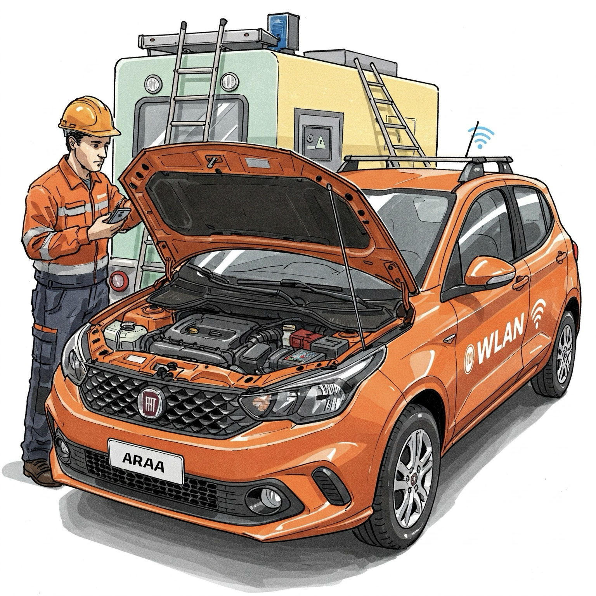

1. Procedimentos Antes de Sair com o Veículo
Antes de iniciar qualquer deslocamento, o condutor deve realizar uma inspeção básica no veículo para garantir a segurança e bom funcionamento. Verifique:
- ✅ Nível da Água do Radiador – Caso esteja baixo, complete com água ou fluido adequado;
- ✅ Óleo do Motor – Verifique o nível e complete se necessário;
- ✅ Calibragem dos Pneus – Ajuste conforme a recomendação do fabricante;
- ✅ Faróis e Lanternas – Teste para garantir que estão funcionando corretamente;
- ✅ Freios – Teste antes de sair do local;
- ✅ Combustível – Certifique-se de que há combustível suficiente para o trajeto.


 (91) 983056160
(91) 983056160